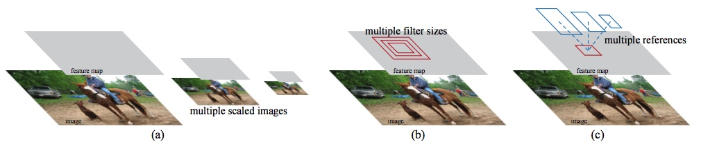

摘要-最新的基于区域建议来预测物体位置方法。像SPPnet和Fast R-CNN的进展减少了监测网络的耗时，区域预测则成为了计算的瓶颈。这篇文章介绍了一个共享全部卷积特征的区域建议网络（RPN），实现了几乎无消耗的区域建议。RPN是一个同时预测每个位置物体边界和打分的全卷积网络。RPN使用端到端训练来生成高质量区域建议，Fast R-CNN就使用RPN来做预测。我们通过共享他们的卷积特征-使用最近很火的“注意力”机制，RPN部分告诉整个网络要去看哪里，这样我们近一步把RPN和Fast R-CNN整合到一个单一神经网络中。对于很深的VGG-15模型，我们的检测系统使用GPU计算可以达到5帧每秒（使用PASCAL VOC 2007，2012 和COCO 数据集 300个图）。 在 ILSVRC和COCO 2015竞赛中，Faster R-CNN 和RPN 多次应用于冠军的技术栈中。代码已经公开了。
1 简介
物体检测最近的发展受益于区域建议方法和区域卷积网络。尽管区域卷积网络相比于传统方法计算代价高昂，但得益于建议过程中共享卷积其计算代价大大减少。最近使用很深网络的Fast R-CNN达到了近乎实时的结果（忽略区域建议耗时）。现在区域建议是前沿检测系统的瓶颈。
区域简易方法通常依赖复杂度较低的特征和比较经济的推理方案。Selective Search是一个最流行的方法，他基于设计过的低级别特征贪心合并超级像素。甚至当我们比较高效检测网络时，Selective Search CPU的2秒一帧都被拿来做基准。EdgeBoxes最近在效率和质量上达到了最好的平衡，每帧只需要0.2秒。即便如此，区域建议步骤仍然与监测网络耗时相当。
你可能记得 Fast R-CNN 受益于GPU计算，但很多研发中的区域建议方法是在CPU上实现的，这导致耗时的不可比较。一个显而易见的加速方法是使用重新实现一个适合GPU的版本。这可能是个有效的方法，但无视其后续检测网络重新实现会丢失共享计算中重要的opportunities。
在这片论文中，我们展示了一个算法上的改变-使用深度卷积网络优雅高效地是建议计算达到几乎不耗时。为了达到目标，我们引入了新颖的使用共享权值的区域建议网络。测试时使用共享卷积网络，达到了在微不足的时间内实现建议。
我们意识到区域检测器所使用的卷积特征表，比如Fast R-CNN，同样可以用于区域建议。在这些卷积特征上，我们添加了几个卷积层同时常规框内的每个位置做边界回归和打分。RPN就是这样一个完全卷积网络，对生成检测建议可以实现端到端训练。

图1：处理多尺寸多角度的多种不同方法
1. 构建不同的图像金子塔，分类器使用所有的缩放数据。
2. 构建不同尺寸的过滤器做特征。
3. 我们在回归函数中使用boxes金字塔。
RPNs设计用来高效预测一个大范围缩放过的区域建议。与一些流行比如[8][9][1][2]不同，他们使用的是图像金字塔，或是过滤器金字塔，我们介绍了新颖的“anchor”盒子，他可以考虑不同尺寸和视角。我们的方法可以想想成一个回归关系的金字塔，他避免了枚举图像和过滤器来处理尺度角度问题。这个模型使用单缩放图像训练后表现良好，而且速度上有提升。
为了把RPNs与Fast R-CNN物体检测网络整合，我们